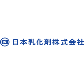
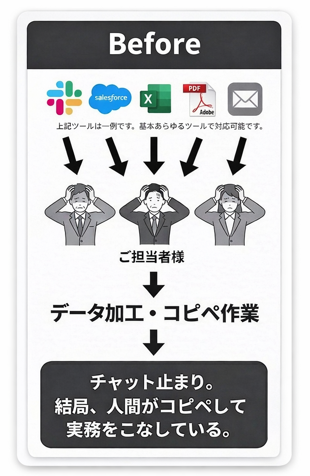
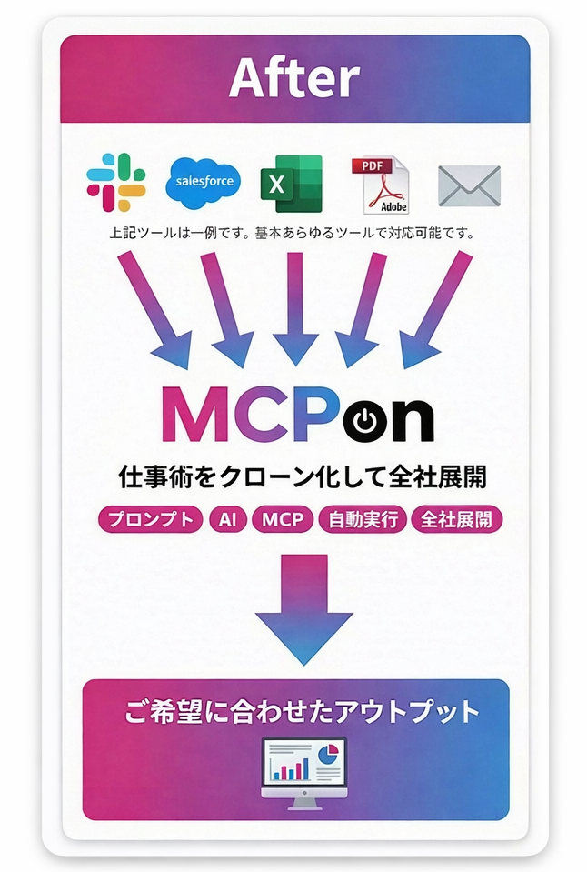

導入実績

社内の情報をAIが全て集約する Before / After
社内のデータをAIが活用できるので、ミスが無くなります。


自社の業務は、どこまでAIで自動化できるか。
まずは専門スタッフが無料でアドバイスします。
強引な営業は一切ありません。最短翌営業日に専門スタッフよりご連絡します。
COMMON SCENARIO
こんな場面ありますよね？
Excelからシステムへ貼り付ける際に1行ズレる
数字の打ち間違い（例：100,000→10,000）
金額を入力する際に税抜/税込を勘違い
電話番号のハイフン位置がバラバラ
最新ファイルだと思って開いたら古いバージョンだった
チャットで送られた情報を手入力で転記して誤字
口頭で聞いた数値を聞き間違える
自社の業務は、どこまでAIで自動化できるか。
まずは専門スタッフが無料でアドバイスします。
強引な営業は一切ありません。最短翌営業日に専門スタッフよりご連絡します。
AI活用を「試行」で終わらせない。
MCPonが選ばれる3つの理由
Why MCPon
01
技術
ツール接続の自由度
既存の基幹システムやSaaSを、独自のMCP技術で安全に接続。AIが直接実務を操作できる環境を構築します。
02
安全
高度な権限・ログ管理
誰が・いつ・どのツールを操作したかを全て記録。社内の権限設定を維持したまま、安全な全社展開を可能にします。
03
体制
一気通貫のフルサポート
戦略策定からプロンプト作成、現場への教育まで。AI活用のプロが貴社のチームの一員として定着まで伴走します。
最新のLLM（ChatGPT, Claude, Gemini等）すべてに対応。インフラを選ばない柔軟な導入が可能です。
自社の業務は、どこまでAIで自動化できるか。
まずは専門スタッフが無料でアドバイスします。
強引な営業は一切ありません。最短翌営業日に専門スタッフよりご連絡します。
取組事例 Case
自社の業務は、どこまでAIで自動化できるか。
まずは専門スタッフが無料でアドバイスします。
強引な営業は一切ありません。最短翌営業日に専門スタッフよりご連絡します。
どんな業務でも、MCPonなら自動化可能 業界・部署を問わず、AIが貴社の実務をサポートします
どんな業界の業務でも
どんな部署の業務でも
現在お使いのツールと、そのまま接続
独自のMCP技術により、主要SaaSから自社システムまでセキュアに連携します
自社の業務は、どこまでAIで自動化できるか。
まずは専門スタッフが無料でアドバイスします。
強引な営業は一切ありません。最短翌営業日に専門スタッフよりご連絡します。
サービス内容・プラン Plan
導入の流れ
最短1ヶ月〜
初期導入
60万円〜
5台まで一律
月額サービス利用料
15万円/月
簡易サポートサービス
30万円/月
AIトランスフォーメーション
コンサル
100万円〜
自社の業務は、どこまでAIで自動化できるか。
まずは専門スタッフが無料でアドバイスします。
強引な営業は一切ありません。最短翌営業日に専門スタッフよりご連絡します。
よくある質問 FAQ
-
いいえ、一切ありません。MCPonで扱うデータはAIモデルの学習には使用されません。お客様のデータは処理完了後に自動削除され、外部へ流出するリスクはゼロです。
-
標準ツール（Slack、Salesforce、freee、kintone等）はMCP設定のみで即座に連携可能です。独自システムについても、APIがあれば追加開発なしで接続できるケースがほとんどです。
-
MCPハブにより、誰が・どのツールに・どこまで操作できるかを厳格にコントロールします。すべての操作はログに記録され、既存の社内権限体系をそのまま引き継げます。
-
はい、可能です。MCPonは特定のAIモデルに依存しません。ChatGPT、Claude、Gemini等、お客様が既にご契約中のLLMをそのまま活用できます。
-
初日から効果を実感いただけます。標準ツールの接続は即日完了。本格的な業務フロー構築も最短1ヶ月で稼働可能です。
すべての企業にAIの力を。 Company
| 社名 | AION株式会社 |
|---|---|
| 所在地 | 東京都渋谷区千駄ヶ谷3-5-10 |
| 代表取締役 | 細貝 拓磨 |
| 資本金 | 100万円 |
| 事業内容 | AIエージェント「MCPon」の開発・運営、MCP導入支援、AI人材育成コンサルティング、DX推進支援 |
| 設立 | 2025年5月 |